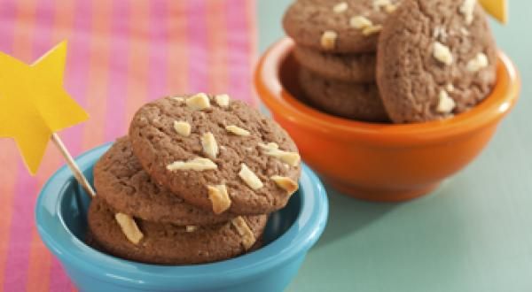
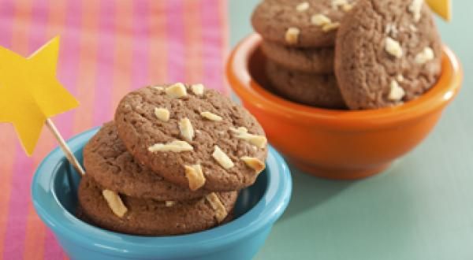

Receita de cookies de chocolate

Origem da receita
A origem do cookies se deu pela chef gastronomica Ruth Graves Wakefield em 1938 ,epoca que tinha restaurante de comida caseira
e tudo começou quando ela colocou pedaços de barras de chocolate e foi assim que criou o primeiro cookie de
chocolate.
Ir para origem da receita
O que me motivou foi porque adoro esse biscoito, sendo que no subway é um dos melhores locais para saborear, biscoito com textura macia e deliciosa que combina com tudo café da tarde, lanche , depois do almoço, serve para tudo.

 
